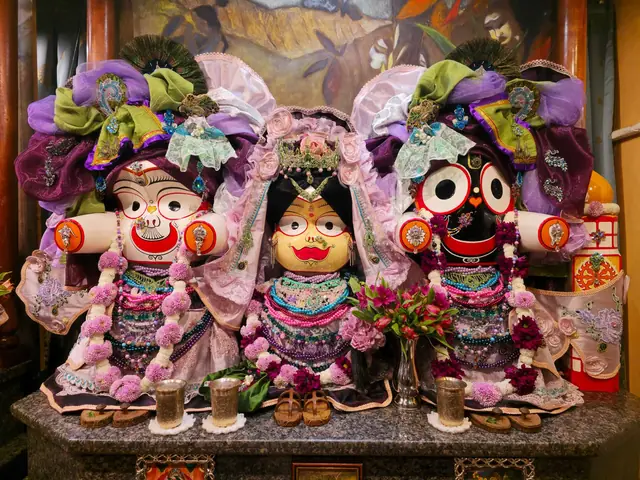
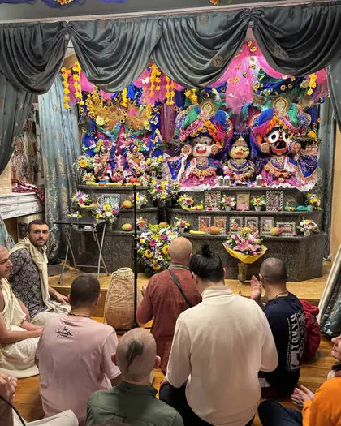
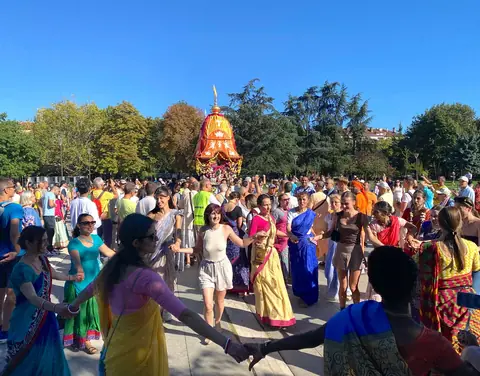

Древна духовна традиция · жив път днес
Общество за Кришна съзнание
Вероизповедание от традицията на Гаудия ваишнавизма: пътят на бхакти, любящата преданост към Бога, познат в Бхагавад-гита и Шримад Бхагаватам.

Три стъпки
Нов ли сте? Започнете оттук
Прочетете
Бхагавад-гита и Шримад Бхагаватам са нашите основни писания. Книгите на Шрила Прабхупада са основата на изповеданието.
Към книгитеПовтаряйте
Харе Кришна, Харе Кришна,
Кришна Кришна, Харе Харе
Харе Рама, Харе Рама,
Рама Рама, Харе ХареСветите имена могат да се възпяват свободно, навсякъде, от всекиго.
За мантрата и учениетоЕлате
Лекциите, класовете и съботните програми са открити за гости. Всеки ден в 8:00 е клас по Шримад Бхагаватам.
Часове и адрес
Четете
Книгите на Шрила Прабхупада на български
Книгите на Шрила Прабхупада, издавани от Бхактиведанта бук тръст, са основата на нашето изповедание.
- Бхагавад-гита каквато е
А. Ч. Бхактиведанта Свами Прабхупада
Най-известният и почитан духовен текст на Индия (разговорът между Кришна и Арджуна) с пълен санскритски текст, превод и подробен коментар на Шрила Прабхупада. Основополагащо четиво за всеки, който се интересува от ведическата мъдрост.
- Шримад Бхагаватам
А. Ч. Бхактиведанта Свами Прабхупада
„Зрелият плод на ведическото дърво на знанието.“ Многотомно издание с превод и коментар, разкриващо науката за Бога и пътя на чистата преданост.
- Шри Чайтаня-чаритамрита
А. Ч. Бхактиведанта Свами Прабхупада
Житието и ученията на Шри Чайтаня Махапрабху, най-пълният богословски труд на традицията Гаудия ваишнавизъм.
- Кришна, Върховната Божествена Личност
А. Ч. Бхактиведанта Свами Прабхупада
Разказите за деянията на Кришна, предадени достъпно и увлекателно, обобщение на Десета песен на Шримад Бхагаватам.
- Нектарът на предаността
А. Ч. Бхактиведанта Свами Прабхупада
Наука за същината на бхакти: как да развием чиста любяща преданост към Бога. Изложение на класическия труд на Рупа Госвами.
- Нектарът на наставленията
А. Ч. Бхактиведанта Свами Прабхупада
Кратко, но дълбоко ръководство за духовния живот в единайсет стиха с коментар, практическа основа на предаността.
- Шри Ишопанишад
А. Ч. Бхактиведанта Свами Прабхупада
Една от най-важните Упанишади: знанието, което ни доближава до Върховния Бог, с превод и коментар.
- Науката за себепознанието
А. Ч. Бхактиведанта Свами Прабхупада
Сборник от есета и разговори, които представят основите на Кришна съзнание за съвременния читател, отлично въведение.
- Пътуване към себеоткриването
А. Ч. Бхактиведанта Свами Прабхупада
Достъпни беседи за душата, съзнанието и духовния път, за всеки, който прави първите си стъпки.
- Лесно пътуване до други планети
А. Ч. Бхактиведанта Свами Прабхупада
За духовната природа на съзнанието и възможността то да се издигне отвъд материалния свят.
- Отвъд раждането и смъртта
А. Ч. Бхактиведанта Свами Прабхупада
Какво се случва след смъртта? Ясно изложение за душата, прераждането и пътя към освобождение.
- Съвършени въпроси, съвършени отговори
А. Ч. Бхактиведанта Свами Прабхупада
Разговор между Шрила Прабхупада и млад търсещ, живо въведение в духовните въпроси на живота.
- Учението на Бог Чайтаня
А. Ч. Бхактиведанта Свами Прабхупада
Същината на ученията на Шри Чайтаня Махапрабху: основата на пътя на санкиртана.
- По-висшият вкус
Бхактиведанта бук тръст
За вегетарианството и духовната кухня, с рецепти за прасадам, храна, предложена на Бога.
- Раджа-видя: Царят на знанието
А. Ч. Бхактиведанта Свами Прабхупада
За най-висшето и същевременно най-радостно знание: пътя на предаността, „царят на знанието“.
- Възпявай и бъди щастлив
Бхактиведанта бук тръст
За силата на маха-мантрата Харе Кришна и практиката на медитация чрез възпяване на светите имена.
Как да поръчате: пишете ни на info@krishnabg.com или се обадете на 02 961 60 50.
Учение накратко
Философията накратко
Ученията на Кришна съзнание отговарят на най-дълбоките въпроси на човека: Кой съм аз? Какъв е смисълът на живота? Какво е Бог?
- Бог е личност. Вярваме, че Абсолютната Истина в крайна сметка е личност, изпълнена с любов, а не безлична сила.
- Душата е вечна. Истинското „аз“ не загива със смъртта на тялото.
- Бхакти: пътят на предаността. Любящото служене на Бога е същината на духовния живот.
- Свещеното слово. Бхагавад-гита и Шримад Бхагаватам са нашите основни писания.
- Ненасилие и състрадание. Вегетарианството и грижата за всички същества са естествена част от практиката.
Маха-мантрата
Маха-мантрата е „великата мантра за освобождение“. В нея се обръщаме към Бога (Кришна и Рама) и към Неговата вътрешна духовна енергия (Харе) с молба за любящо служене. Възпяването ѝ пречиства съзнанието, успокоява ума и пробужда заспалата любов към Бога.
„Истинската религия означава да опознаем Бога и да Го обикнем, а средството за това в нашата епоха е възпяването на светите Му имена.“
Обществото за Кришна съзнание е българското вероизповедание на Международното общество за Кришна съзнание (ИСКОН), духовно движение, основано през 1966 г. в Ню Йорк от Бхактиведанта Свами Прабхупада (1896–1977).
Елате
Храмът в София
| Адрес | гр. София, кв. „Малинова долина“, бул. „Климент Охридски“ 119 |
|---|---|
| Телефон | 02 961 60 50 |
| Имейл | info@krishnabg.com |
| Понеделник до петък | 7:30 до 9:00 и 18:00 до 18:30 |
|---|---|
| Събота | 7:30 до 9:00 и 15:30 до 20:00 |
| Неделя | 7:30 до 9:00 и 18:00 до 18:30 |
| Всеки ден, 8:00 | Клас по Шримад Бхагаватам |
|---|---|
| Събота, 15:30 до 19:30 | Празнична програма |
Бургас
Данни за контакт: в процес на допълване.

Ратха ятра в България
Ратха ятра, празникът с колесница, се провежда в България от 1996 г. 31-вият фестивал беше на 23.08.2026 в парк „Борисова градина“, със шествие с колесницата от 15:00 до 18:30 в съпровод на музика, възпяване на мантри и танци.

Свържете се с нас
Контакти и правен статут
За запитвания относно вярата, дейностите, медийни въпроси или сътрудничество пишете на info@krishnabg.com или се обадете на 02 961 60 50.
| Наименование | „Общество за Кришна съзнание“ (ОКС) |
|---|---|
| Статут | Регистрирано вероизповедание, самостоятелно юридическо лице (чл. 14–15 от Закона за вероизповеданията) |
| Съдебна регистрация | Софийски градски съд, ф.д. № 1663/2003 г. (парт. № 7, том 1, стр. 60) |
| ЕИК / БУЛСТАТ | 000681328 |
| Управление | Общо събрание · Национален съвет · Председател на Националния съвет |
|---|---|
| Седалище и адрес | гр. София, кв. „Малинова долина“, бул. „Климент Охридски“ 119 |
| Уебсайт | krishnabg.com |
| Имейл | info@krishnabg.com |